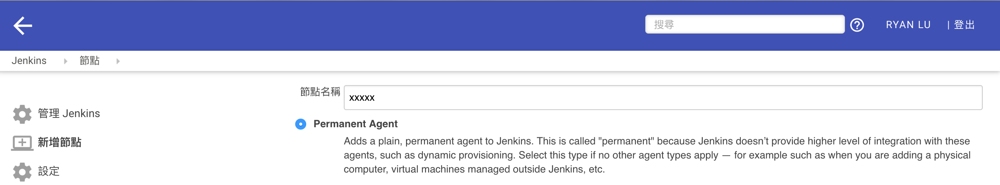
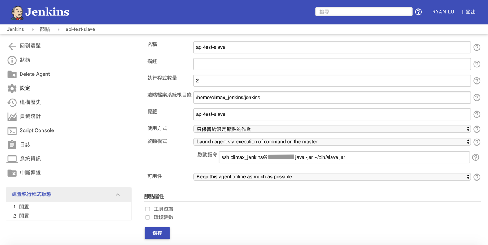
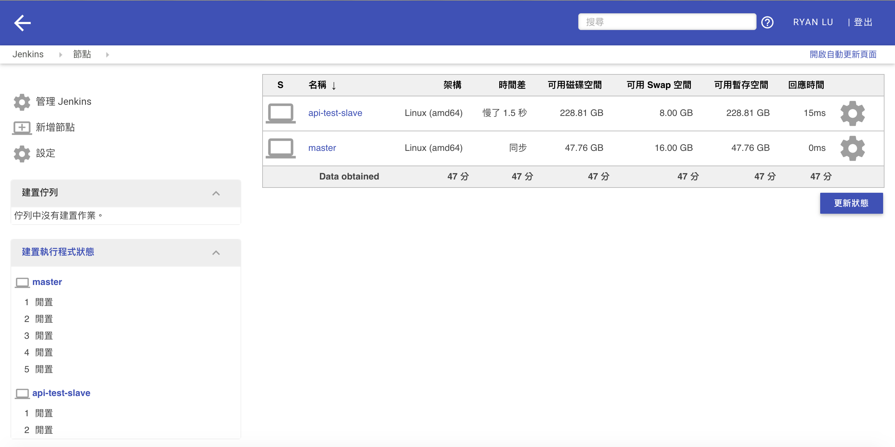

- Master node will start the slave agent on the slave machne via SSH.
- Automatic SSH login without password from master node to the slave node is needed.
- Master node will be running as a specific user called Jenkins to start the slave agent.
SSH Login to Jenkins master node
$ ssh $USER@$IP
$USER is the master server user name.
$IP is the master server ip
Switch to jenkins user
$ sudo -iu jenkins
Create a ssh key if the ssh key not exist.
$ ssh-keygen -t rsa
Create a .ssh folder to slave server
$ ssh $USER@$IP mkdir -p .ssh
$USER is the slave agent user name.
$IP is the slave agent server ip
Write the ssh key to the authorized_keys of slave server
$ cat .ssh/id_rsa.pub | ssh $USER@$IP 'cat >> .ssh/authorized_keys'
$USER is the slave agent user name.
$IP is the slave agent server ip
SSH to slave agent server
$ ssh $USER@$IP
$USER is the slave agent user name.
$IP is the slave agent server ip
Create the bin folder
$ mkdir bin && cd bin/
Download the .jar file from master server
$ wget http://$URL/jnlpJars/slave.jar
$URL is your jenkins master server url. ex: 10.0.1.1:8080
Check the java has installed on slave agent server, if no please install it.
Go to 管理 Jenkins > 管理節點 on jenkins web.
Click New Node/新增節點

New Node Settings

Go back to check connection
